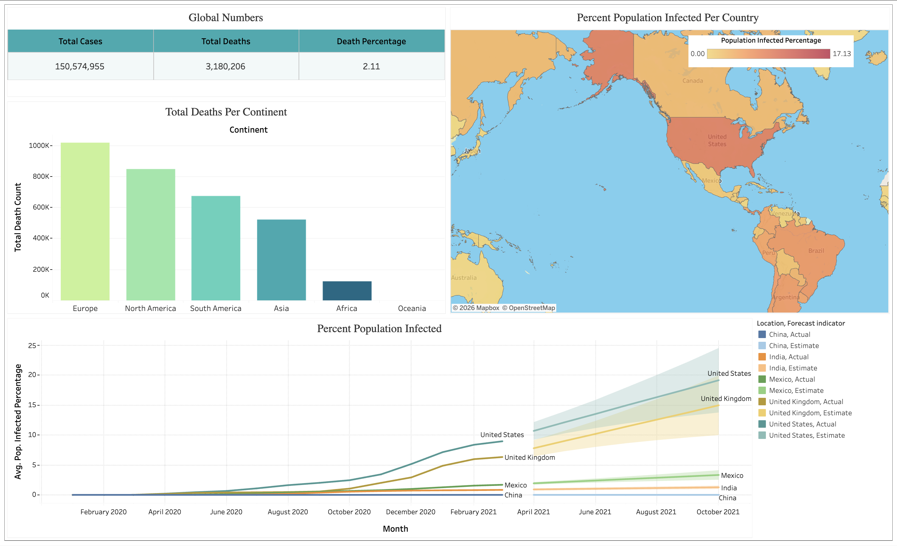
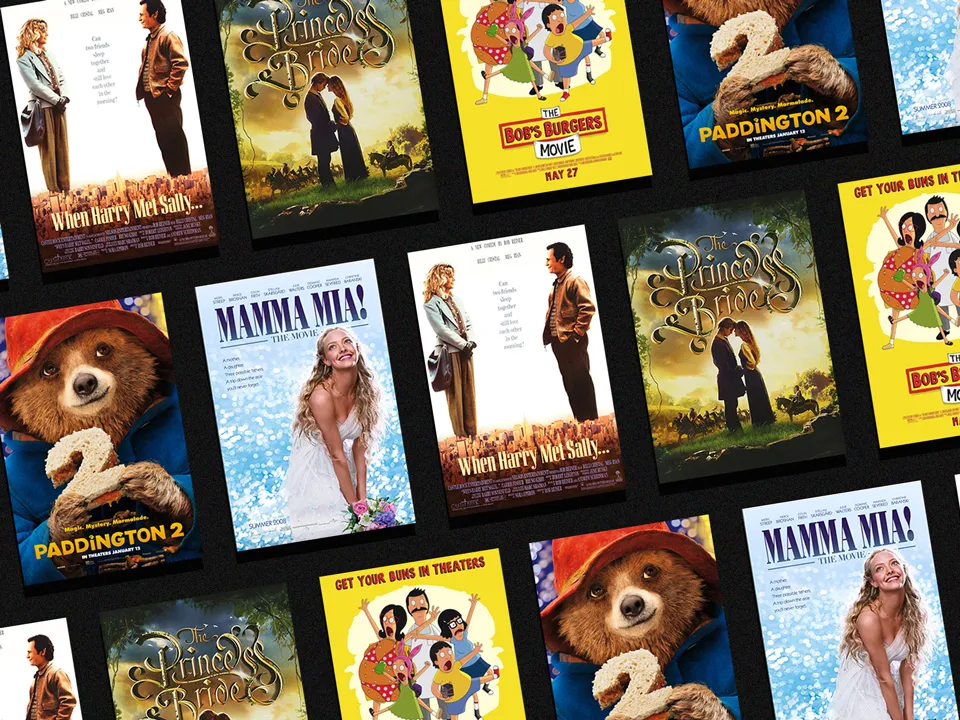
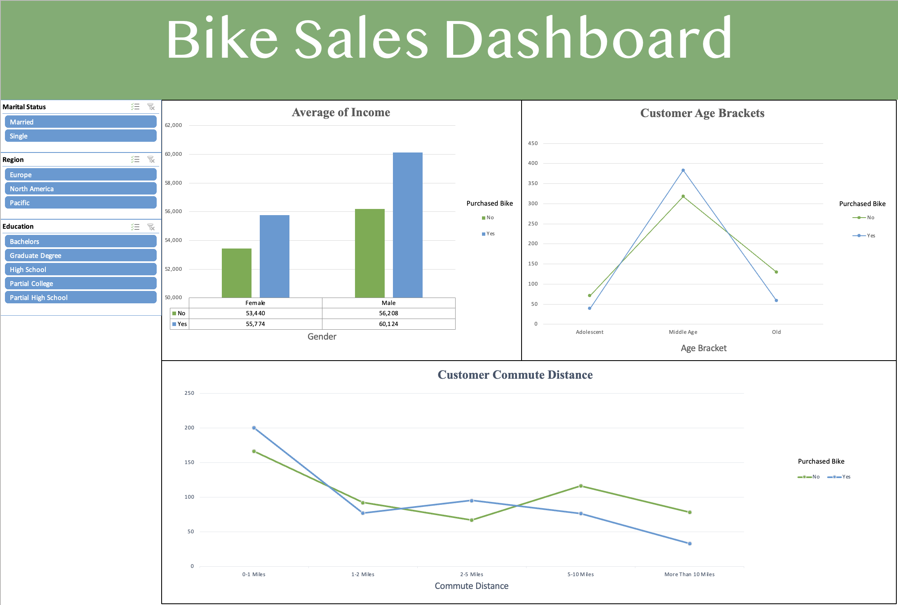

SQL Project
This project explores global COVID-19 data using SQL to analyze trends in cases, deaths, and vaccination progress across countries.
The analysis calculates infection rates relative to population, evaluates death percentages, and identifies countries and continents
with the highest case and death counts.
The project utilizes SQL techniques such as joins, aggregations, window functions, common table expressions (CTEs), temporary tables,
and views to combine COVID deaths and vaccination datasets and compute rolling vaccination totals. The resulting queries transform
raw pandemic data into structured insights and datasets that can be used for further visualization and analysis in Tableau.

An interactive Tableau dashboard that visualizes global COVID-19 trends, including case counts, death totals, and vaccination progress. Using data prepared from the Our World in Data COVID-19 dataset, the dashboard allows users to explore patterns across locations and time through interactive filters and visual summaries.
In this project, Nashville housing data is cleaned and transformed using SQL to prepare it for analysis. The workflow includes standardizing date formats, handling missing property addresses, splitting address fields into separate columns, removing duplicate records, and dropping unnecessary columns to create a more consistent and analysis-ready dataset.

This project analyzes relationships between movie attributes such as budget, gross revenue, and other numerical features using Python. With Pandas, NumPy, Matplotlib, and Seaborn, the analysis includes data cleaning, correlation matrix analysis, and data visualization to identify which variables are most strongly associated with box office performance.

Analyzes bike sales data in Microsoft Excel to identify relationships between customer demographics such as age, income, and commute distance and purchasing behavior through structured data cleaning and transformation. Utilizes pivot tables, slicers, and an interactive dashboard to present clear data-driven insights that support trend analysis and informed decision making.